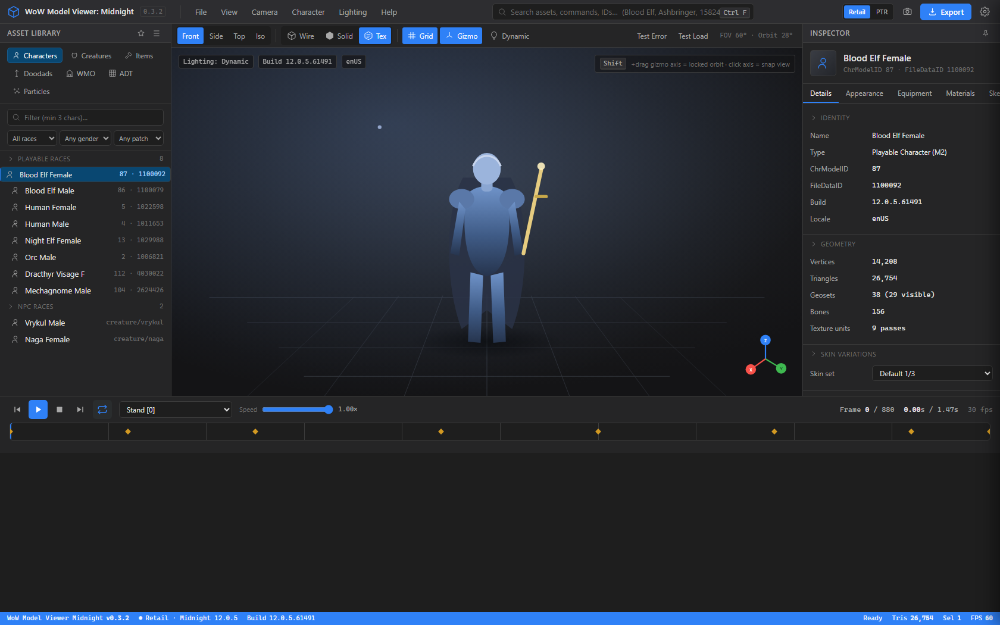
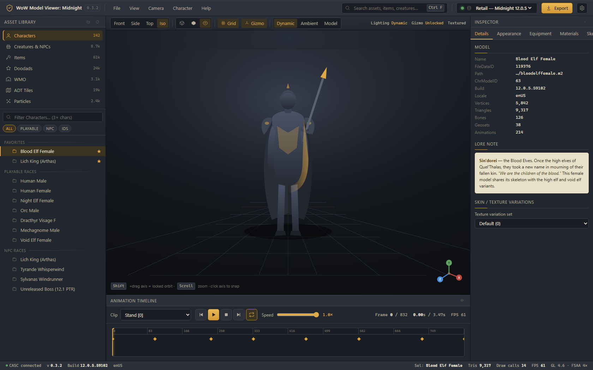
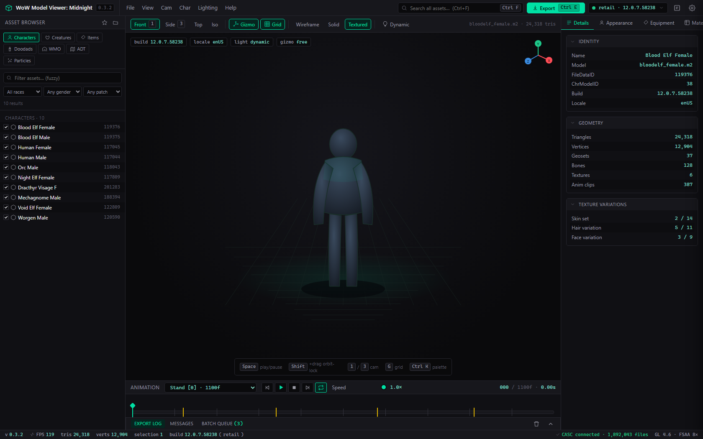

Three high-fidelity, fully self-contained design prototypes for a modern reskin of the model viewer/exporter. These are static HTML mockups for review only — the live C++/wxWidgets application is untouched. Click a card to open the clickable prototype; everything runs offline.

A clean neutral-dark workspace in the spirit of Blender, Unreal and Substance. One restrained accent, the viewport as hero. The safe modern default.
Open prototype
The same modern IA skinned with tasteful Warcraft cues — slate base, warm gold accent, subtle parchment for read-heavy panels. Warcraft soul, clean and legible.
Open prototype
Dense, high-contrast, keyboard-first. Batch export queue, presets, fuzzy tree, command palette (Ctrl+K), and a prominent log. Built for exporting at scale.
Open prototype